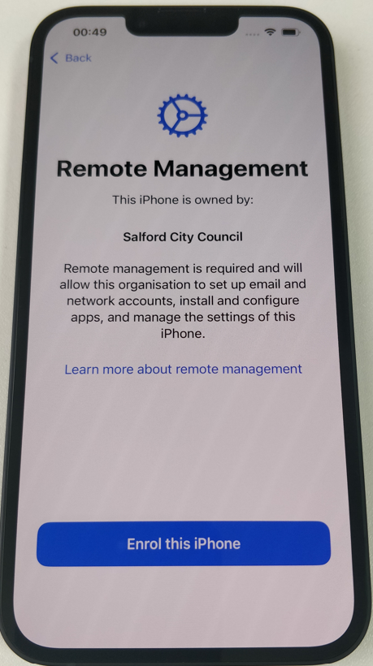
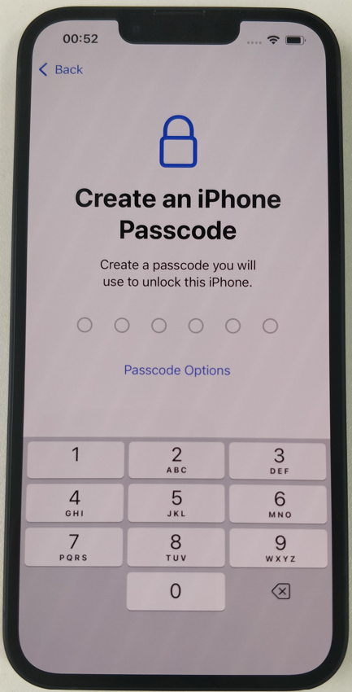
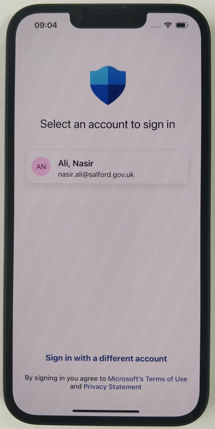

üì≤ Step 5: Set Device Category
Set the device category, select
SCC Mobile Phones
The phone will take a couple minutes to finsh the enrolment and check device settings.

Welcome to your new council-issued mobile device. This guide will help you unbox, configure, and use your device correctly.
⬇️ Download PDF VersionBefore powering on the iPhone, please insert the SIM card as follows:
Important: Make sure the SIM card is seated properly before powering on the device.
1. Power on your iPhone
2. Set the language
3. Set the Region and appearance
4. Click Set up without another device
5. Select a secure Wi-Fi network (home or a personal network).
Enrol the iPhone with Remote Management.
Sign in using your council email and password.
Set up Face ID (Optional)
Create a Passcode
Enable Location Services.
Locate the
Company Portal App and sign in using your work email and password.
Set the device category, select
SCC Mobile Phones
The phone will take a couple minutes to finsh the enrolment and check device settings.
Locate the MS Defender App, select your work account to sign in
Agree to the Terms of Use and click Accept
Tap Allow Microsoft Defender to set up a local VPN connection
Tap Allownotifications.
The phone is now all set up!
Your device will regularly receive system and security updates from Apple.
Please ensure these updates are installed to keep the device secure and compliant.
Submit a ticket via Rubix using the following options
• Ticket Type:Do you want us to do something new or make a change to how something works?
• Ticket area:Hardware
• Category:Smartphone
For a New Device/SIM, use the following:
• Sub category:Request New Mobile Device/SIM
This ensures the correct request form is used and includes the necessary cost code and required approval
No. All usage is tracked via weekly/monthly reports and must comply with council policy.
No. Linking personal accounts is not permitted on council-issued devices.
Apps like Outlook, Teams, Company Portal, GoBright, Authenicator and Whatsapp are included. Some roles may have extra apps pre-installed.
Log a Rubix request including the app name, App Store link, if the app is free or paid along with business justification. The security team will review your request.
Log a ticket via Rubix. If lost/stolen, include a police report reference. We will attempt a remote wipe, terminate any SIM contracts and issue a replacement if needed.
Important: All files and data will be permanently erased and cannot be recovered
Go to Settings> Transfer or Reset iPhone> Click Erase All Content and Settings Click Confirm
Go to Settings> General> About> The serial number will be displayed on this screen.